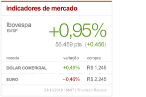

grid
Este widget ocupa 4 colunas do grid, devendo assim estar incluído em uma área que possua 300px. A altura deste widget é fixa em 256px, incluindo bordas.
Exibe os valores referentes ao índice Ibovespa e as cotações do dólar comercial e Euro.
Para utilizar este destaque, inclua a seguinte app como INSTALLED_APPS:
INSTALLED_APPS = [
#...
'libby.widgets.widget_economia_mercado',
#...
]
migration
Não se esqueça de rodar as migrations após instalar a app. Estas migrations criam o widget no banco.
O conteúdo a ser servido neste widget é obtido através da url http://g1.admin.globoi.com/portal/widget-economia-home-globocom.html.
Este conteúdo deve ser estatizado no filer do produto em questão. O path deverá ser /libby/widgets/widget_economia_mercado/index.html.
Warning
Importante observar que por regra, a resposta só pode ser salva neste path se seu status-code for 200.
Para teste local, o snapshot libby/widget_economia_mercado/widget_economia_mercado.html será utilizado.
Na home da globo.com, este procedimento foi feito através de um shell script rodando no cron.
Este destaque precisa ser associado a uma área qualquer do template da página em que se deseja usá-lo.
Essa associação pode ser feita manualmente (via migrations ou banco de dados), ou usando o admin de associação de área a box provido pelo libby.
Dado que este widget está associado a alguma área, para utilizá-lo, basta adicioná-lo a área em questão.
